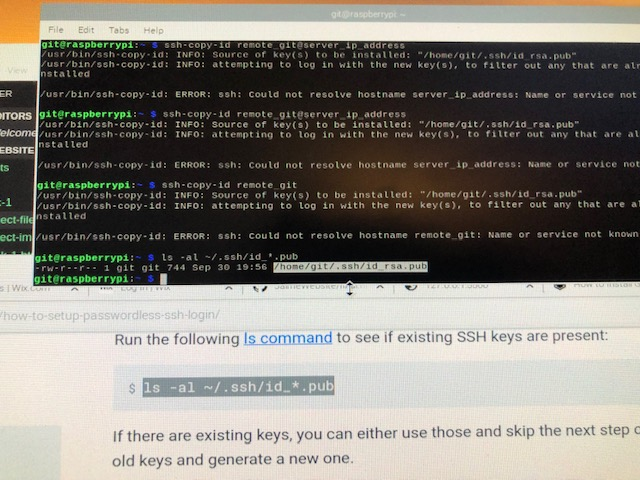
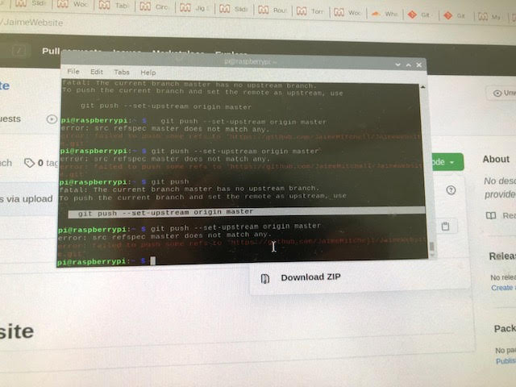
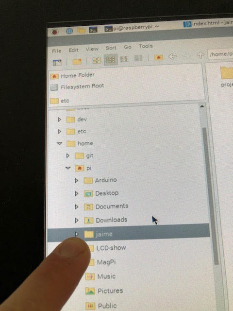
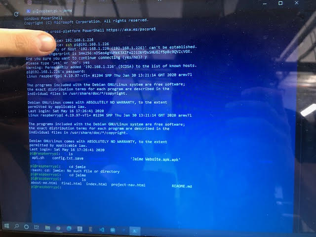
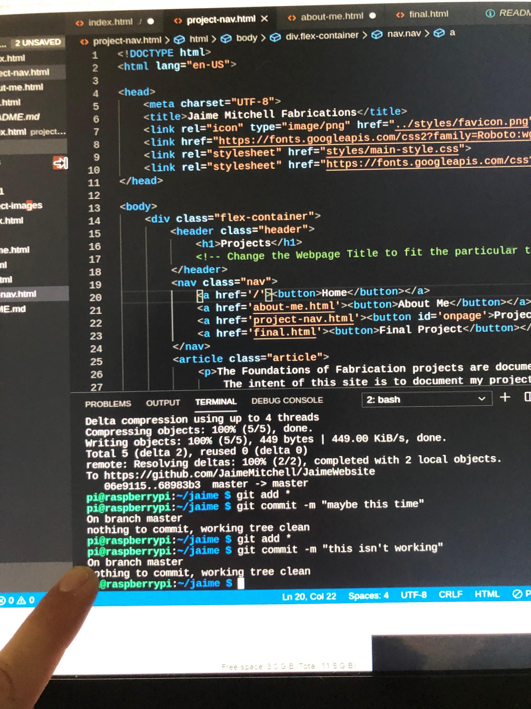
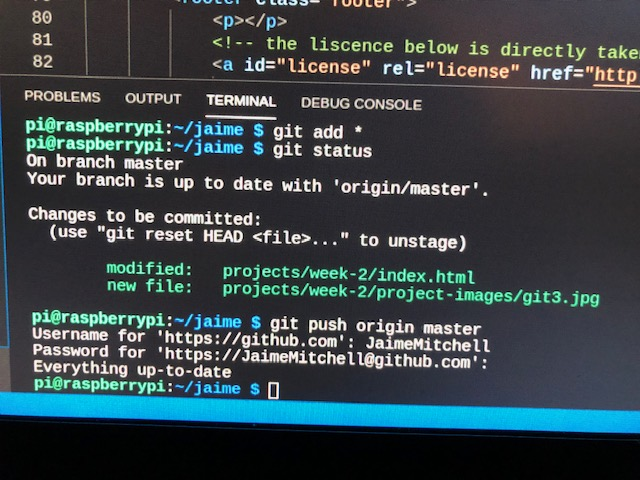
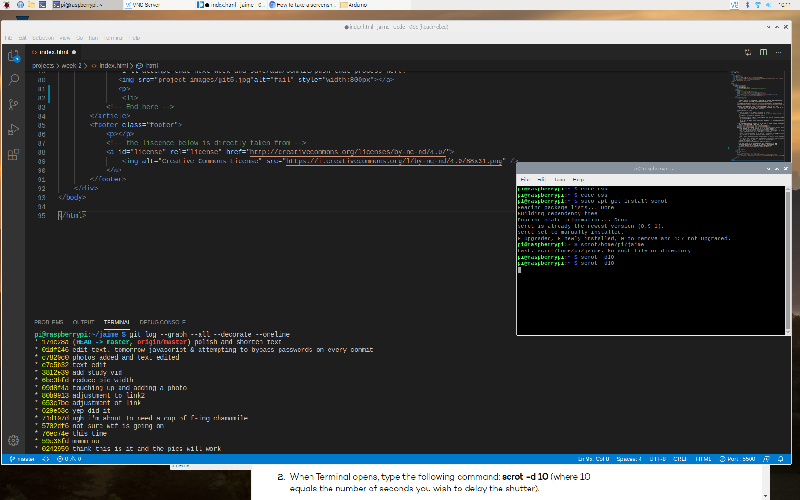

Git and Github had been something I've had a 10 minute previous experience with. As part of my Corona lock down I bought a Raspberry Pi and Elegoo set (Arduino kit knockoff), joined a free online class (CS50) to learn more about computer science.
The class required Github to turn in assignments but I didn't really get git's gest. Not until last week, when the desktop I was using for this website died in it's sleep. The one time in 15 years I didn't back up my work compulsively...
What I learned in the process:
- When the desktop died the Raspberry pi took over the project.
I found a knockoff version of Visual Studio Code for the Pi here.
- A repository is the folder of my website's code
- Git automatically takes snapshots of everything I do to my repositoy, like a spy tracking my every move.
Or like Adobe Lightroom's history.
- I have to have my files in the correct location (the Pi Home folder for me) then initialize Git to that folder.
If Git can't see the file clearly it will ignore me and tell me I'm making fatal errors which felt a little passive
aggresive...
- This happened because I tried to set up Git with SSH on my Pi, and that didn't go over well because I didn't understand
how to use either Git or SSH. ...Baby steps... 😦

 The correct place to initialize Git! 😊

Corey showed me how to use SSH, seperate from Git, to control a "headless" Pi. 
- Once Git's set up to Github, the "remote" repository, I need to tell Git when I want to commit any changes to my remote repository (Github) from the local repository (Rasperry pi).
- Github stores the repository in the sky above like a little colicky cherub angel that takes time to respond. Hard refreshes, 5 minutes of patience, and walking away works.
- Umm, I have to save before I can even think about adding and committing changes to my Repository.
- Then Git needs to be spoken to in the Command Line. The tone should be direct, sequential and
simple as if speaking to a puppy. "git add. git commit -m ("comment"). git push origin main..."
Ctrl+S! You know this... 😦 
As a last step, I have to enter my user name and password everytime, which is a bit tedious for 2020. There's a quicker way to push through the door with Shelly's secret handshake (SSH). I'll attempt that next week and save/add/commit/push that process here. 
- I also learned commands that help me keep track of what I'm doing such as "git status","git log".
...with the added bonus of learning how to take a screenshot in terminal. As you can see, the screenshot is unreadable (unless opened in a new window), I can't control where terminal takes the screenshot, so I'm going to figure out the GUI-way when time permits.
